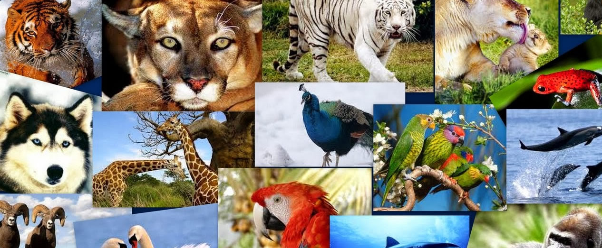

Entre los animales más destacados que podemos mencionar de esta región están 70 especies de mamíferos, como el jaguar (Panthera Onca), el ocelote (Felis pardalis), el mono araña (Ateles Geoffrey); 306 especies de aves, como la guacamaya roja (Ara Macao), el tucán real y el de collar y una gran cantidad de reptiles, como la nauyaca, la boa constrictor y las coralillo, además de anfibios e insectos.
